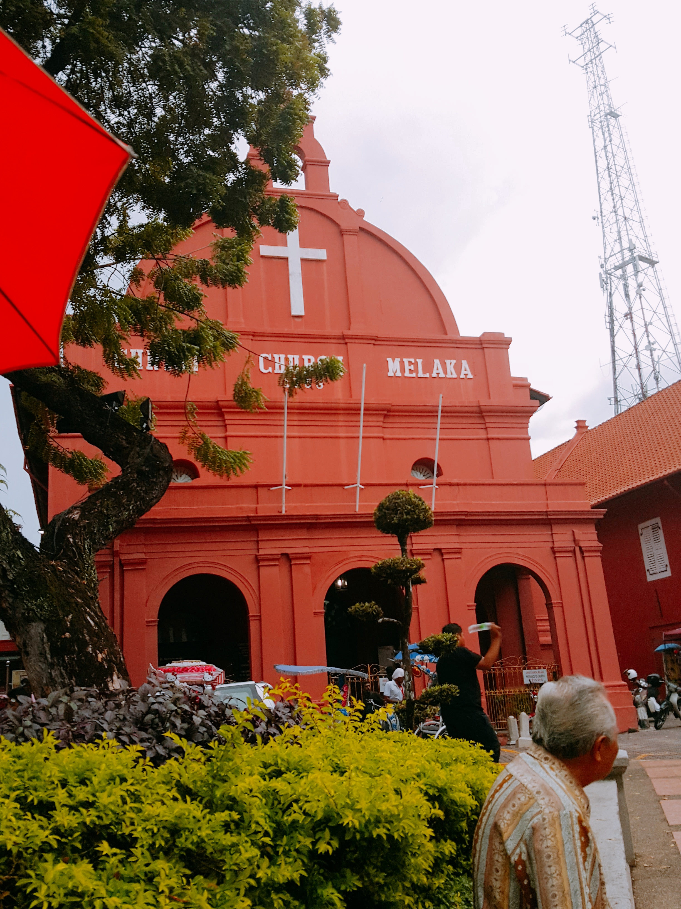

|  | 그리스도 교회 '네덜란드 광장'에 도착하면 가장 먼저 눈에 띄는 붉은빛의 건축물이다. 네덜란드의 말라카 점령 100주년을 기념하기 위해 1753년 세워진 교회로, 네덜란드에서 가져온 붉은 벽돌로 이음새 없이 지어진 것이 특징이다. 3개의 아치형 문 위에는 흰색 십자가와 종탑이 자리하고 있으며, 그 아래에 네덜란드 철수 후 영국인들이 새긴 'Christ Church Melaka'라는 하얀 글자가 장식되어 있다. 주소: Gereja Christ, Jalan Gereja, Bandar Hilir, 75000 Malacca, 말레이시아 영업시간: 오전09:00~오후04:30
|